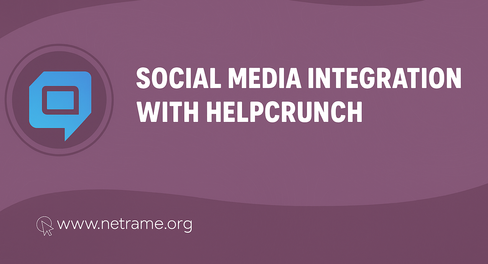
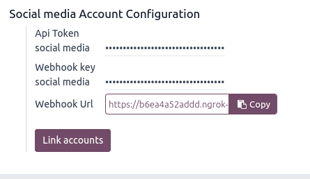

Hephcrunch Integration
Social media integration with Helpcrunch: handle Facebook & Instagram messages directly in Odoo CRM.
Features
- Facebook & Instagram integration with Helpcrunch.
- Automatically creates CRM Leads for incoming messages.
- Reply to customers directly via Chatter in the Lead.
- Supports multi-channel social connections.
- Simple configuration via system parameters and connection forms.
Screenshots
1. Easy to configure!

2. Simple Social network connections maintaining!
5. Leads creation by incoming messages
6. Comfy communication with clients via Lead Chatter